Beta For Fedora 44 and 45, on x86_64
A whole desktop for Linux, in the spirit of BeOS.
From the Wayland window server to two dozen apps, written in Rust on one shared kit. Fast and light, measured. Made for people and their AI agents alike.
Installs beside GNOME, which stays as it is. Under the MIT License.
Yellow tabs, a Deskbar, and a menu bar in every window.
Olo keeps what BeOS got right and adds what work in 2026 needs: a place for coding agents and the machines they run on, seven tiling layouts, five looks, and upgrades in place that keep every window open.
The whole desktop, at half its size.The whole desktop, small. Every other picture on this page is at its own size: one of its pixels to one of yours.
- The tab. Every window wears its name on a tab, yellow on the one you're in. Fan Out (⌃⌘/) sets the tabs side by side, so each can be seen.
- A menu bar in every window, as in BeOS: the commands live with what they act on.
- The desktop is Tracker's too: your disks, Home and what you keep on it.
- Deskbar. The Olo menu, the clock with your next events, the tray, live meters, and this workspace's windows.
- Rex. A coding agent, the agents it started under it, and its transcript, here or on a far host.
- Tracker. Spatial folders, Quick Look for pictures, PDFs, video and archives, and any host's folders, at
rex://addresses.

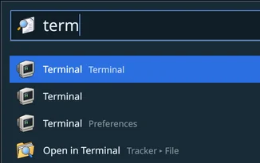
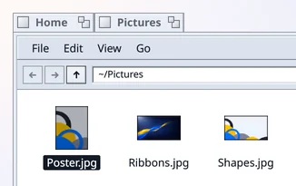
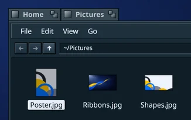
Everything you can see,
an agent can read.
Every Olo window is also a tree of named things, each with its place on the screen. Agents read it and act on it by name, through a documented command, on a screen of their own: never by guessing at pixels, and never with your pointer.
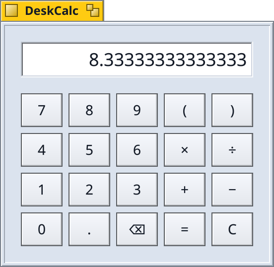
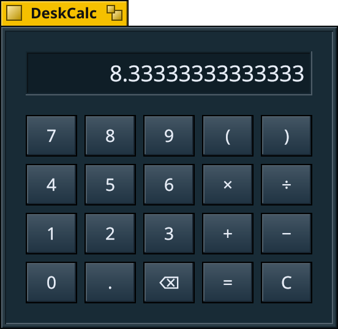
1000 ÷ 120 = 8.3. The sum on DeskCalc is the budget every frame in Olo is measured against: 8.3 milliseconds at 120 Hz. Point at a line of the tree, or at a key, to light one in the other.Tap “What It Reads” to see the boxes the tree names. Then turn on Agent view in the Deskbar to read this page the same way.
$ olo-screen tree agent window 1 "DeskCalc" (olo.deskcalc) focused Window "DeskCalc" at 53,66 266x238 Button "7" at 69,134 42x34 Button "8" at 117,134 42x34 Button "9" at 165,134 42x34 Button "(" at 213,134 42x34 Button ")" at 261,134 42x34 Button "4" at 69,174 42x34 Button "5" at 117,174 42x34 Button "6" at 165,174 42x34 Button "×" at 213,174 42x34 Button "÷" at 261,174 42x34 Button "1" at 69,214 42x34 Button "2" at 117,214 42x34 Button "3" at 165,214 42x34 Button "+" at 213,214 42x34 Button "−" at 261,214 42x34 Button "0" at 69,254 42x34 Button "." at 117,254 42x34 Button "⌫" at 165,254 42x34 Button "=" at 213,254 42x34 Button "C" at 261,254 42x34 TextInput "Expression" value="1000/120" at 75,82 222x36 focused $ olo-screen click agent --role Button --name "=" $ olo-screen tree agent --role TextInput TextInput "Expression" value="8.33333333333333" at 75,82 222x36
Read as structure
The tree reads Olo's widgets, a web page's text and fields, and GTK and Qt windows alike. Every action answers with what is on the screen after it, so an agent always acts on what is there now.
Never in your way
An agent works on a screen of its own, so nothing it does moves your pointer or takes your keyboard. Every action is kept in the screen's history, to scrub back through or export as a video.
On a far host too
An agent on a remote machine can have a screen there, drawn in software where there's no GPU, with no root. It costs no processor time at rest, and stops when the agent's tab ends.
A place for coding agents, and the machines they work on.
Claude Code, Codex and Antigravity are part of the desktop here: each one's state on its tab, in Deskbar and in a notification that jumps to the right pane, with the hosts they run on and the subscriptions they spend.
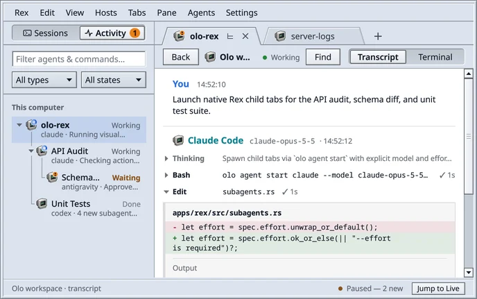

Rex
Olo's client for local and remote workspaces, over SSH or Tailscale. Sessions live on the server, so they outlast a reload, a closed lid and a change of network; what you type shows at once, even over a slow link.
An agent starts its own subagents as child tabs under its tab, on the host's agents service: they keep working with your laptop shut, and every one is there when you reconnect.
$ olo agent start claude \ --name api-audit \ --model claude-opus-5-5 \ --effort max \ --prompt-file brief.md $ olo agent watch --all
Agent Screens
A whole desktop of the agent's own at 120 Hz, with its own session bus and Chrome profile. Watch it live with no copying, scrub back through its recorder, export an MP4, or take control with ⌘K and hand it back.
$ olo-screen start $ olo-screen run agent olo-styled-edit $ olo-screen click agent --name Save
Token Pool
Your Claude and ChatGPT subscriptions in one pool for Claude Code and Codex: the quota that runs out first is spent first, and every model's limits are followed. Each host gets a pool of its own that keeps serving with your desktop off.
Pin its quota bars, or a heatmap of every account, in Deskbar.
Terminal
Shells that outlive reloads and upgrades, tab groups by repository with their worktrees, each tab's pull request and checks, and Keep It Going and Auto Approve for the agents in them, each yours to turn on.
The bridge
Inside any Rex session, olo reaches back to your desktop: open a link, forward a port, send a file, keep a folder in sync, borrow a password. Every permission starts off, per host.
Integrations
Google, Fastmail, CalDAV, GitHub and Telegram accounts in one place. Adding a Google account has Claude Code make its Cloud app for you, on an Agent Screen you can follow.
At rest, Olo does nothing at all.
No polling, and no frame when nothing changed. Every change to what runs each frame, each event or at rest is measured on release builds before and after, and the numbers go in its commit. A few, from the log:
-
4 to 100
Calendar at rest, frames in ten seconds. Now none, 0.0% of a core and 0 wakeups a second, in its month, week and agenda. Stepping through months: 0.71 ms a frame, of the 8.3 it has.
-
1.9%0.1%
An Agent Screen with nothing to do, its share of a core. Its wakes went from 90 a second to 8; from a click to its first new frame, 37 to 42 ms.
-
2000
A chart drawn again the same, frames in ten seconds. The same picture is never a frame: 8.60% of a processor became 0.90%.
-
24444 MiB
A window filling a 5K display, its GPU memory once it has rested thirty seconds and isn't the one you're in. It comes back in 1.4 to 3.1 ms when you return.
-
3.9%~0
The command palette at rest, its share of a core, following all 36,873 folders of a home: a folder made or removed costs only what changed.
Each is judged in absolute terms: a frame's work against its budget, the processor at rest and while animating, and the wait from a key to its pixel. Never against another toolkit.
Twenty-four apps of its own,
all on one kit.
Native through and through: Bluetooth phone profiles, SSH, Telegram's protocol, CalDAV, PDFs, OCR, video and archives are read and spoken in Rust, in process, so the whole desktop looks and behaves as one.
An agent's children open as nested tabs under it (
olo agent), each with a transcript you can read as it works.Typing on a far host is predicted, so it feels near.
Hosts and accounts are set up from Rex itself;
olo syncand Move to Another Host carry a workspace between machines.Its shells live in
olo-termd, apart from the window, so an upgrade or a reload never ends one.Worktrees are made in process with libgit2, and a pull request's checks show as a badge on its tab.
A coding agent titles its own tab. The shell is
brush, witholo-complete's suggestions.Each agent's screen is a whole Olo desktop of its own. It reads windows and web pages as trees and acts by name, never with your pointer.
Take control with ⌘K; recordings keep only the frames that changed.
Passwords are shared with a screen one item at a time.
One window, in three tabs: Accounts, Activity and Machines.
Each remote host can keep a pool of its own (
olo-pool-host).It upgrades without a gap in service.
Folders open spatially, as BeOS's did, each keeping its own view, or in one window.
Quick Look reads pictures, PDFs, video, documents, spreadsheets and archives (zip, tar, 7z, RAR, ISO and more) in process.
DiskBackup's Older Versions of a file are in its menu.
Styles are kept in the file's attributes, as BeOS's StyledEdit kept them, so the text itself stays plain.
Code is highlighted; Page View and a ruler show the printed page.
It opens and saves
.docx,.odt,.rtf, HTML and Markdown.Pictures to crop, rotate, flip and resize; their text is read on the computer.
PDFs to search and to present full screen, and
.pptxdecks.Video from 0.25× to 2×, and audio.
Its keys are in the tree an agent reads, as every Olo window's are: an agent presses = by name.
Here it works out Olo's frame budget: 1000 ÷ 120, in milliseconds.
Events are kept as lossless iCalendar, so what another calendar wrote comes back as it was.
Drag to move or resize; answer invitations; set reminders.
Deskbar's widgets show what's next.
Lists of your own beside Today, Upcoming, All and Done, as a list or a board.
Quick entry understands plain words; tasks take reminders and attachments.
And Deskbar widgets.
The vault is yours, on the computer, sealed with XChaCha20-Poly1305; sync with 1Password accounts is optional, and reviewed.
Scan a QR code to set up a one-time code.
An SSH agent for the session, and items shared with an agent's screen one at a time.
Bluetooth's own profiles, spoken natively: MAP, PBAP, ANCS and HFP.
One-time codes that arrive by text or email go straight to the tab that's waiting for them.
It speaks Telegram's protocol (MTProto) itself, in pure Rust.
Unknown Senders kept apart, and an outbox that survives restarts.
Voice notes in Ogg Opus; Lottie and WebM stickers.
Forecasts from tomorrow.io, hour by hour.
Ask the assistant when to go for a run, and its answer is marked on the charts.
And Deskbar widgets.
Recordings are MP4s, encoded on the GPU, or on the processor where there's none.
What you take goes to the clipboard, or to a folder you choose.
Overview, CPU, memory and zram, disks, network, displays and inputs, and kernel tunables beside them.
The Supervisor keeps the desktop smooth: it lowers builds and indexers, and says when a process spins or leaks.
Inspect any process: its threads, files, memory and limits.
It looks at the whole computer: drivers, disks, backups and services.
What you don't care about, Ignore, and it stays ignored.
It speaks to the DNF5 daemon itself: no
dnfcommand runs underneath.Security advisories with their CVEs; Copr and RPM Fusion repositories.
Undo takes back a whole transaction.
It reads the journal's files itself, and follows them as they grow.
Syntax highlighting picks out what matters in a line; Show in Context brings back the lines around one.
A map of each disk, its partitions to scale.
Everything through UDisks2.
Write an image to a stick, and benchmark a disk.
Click a ring to go into a folder, the middle to come back.
Drag what you don't need into the Collector, then move it to the Trash, which can be undone.
Only what changed, in FastCDC chunks, compressed with zstd and sealed with XChaCha20-Poly1305.
Your home folder by default, leaving out what can be downloaded or built again.
Fast and full validation, and speed limits.
Against Cloudflare's speed test servers, four connections each way.
Beside its numbers, the kernel's own (
TCP_INFO, BBRv3) and the server's diagnostics.Kache keeps what Rust builds made, so what was built once isn't built again.
Its slots and tests, its settings as sliders, and a Deskbar widget.
24 itemsPoint at an app to read what it does; open it for more, and a picture.
And Preferences, twenty-nine panels the palette opens to any single setting, and Notifications, with an inbox and snooze. Google Chrome and Slack come set up to run as Wayland programs; GTK, Qt and Electron programs follow Olo's colours.
Five classic looks,
twenty‑three colour schemes.
Each look brings its own window frames, icons and wallpaper; each scheme recolours them, in light, dark and night. Pixel-exact at 1×, 1.25×, 1.5×, 1.75× and 2×: Olo never resamples a picture.


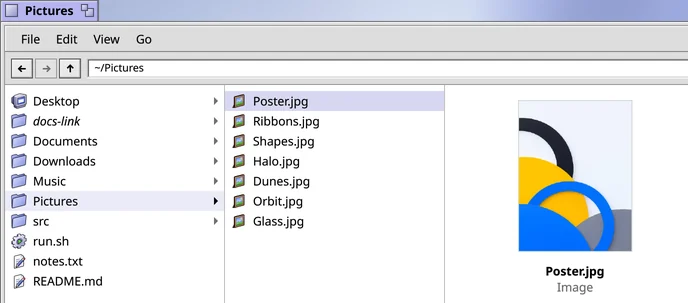


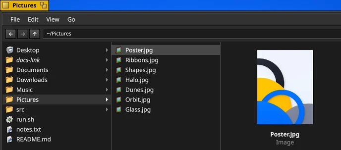

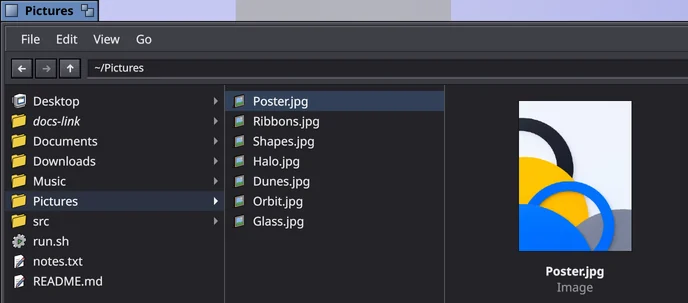

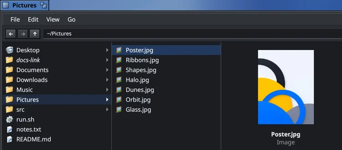


Classic. After BeOS: glossy, bright and friendly.
This page has Olo's three modes too, in the Deskbar: light, dark, and night, which warms the whole screen as Olo's night light does.
Try it beside GNOME. Going back costs nothing.
On a stock Fedora 44 or 45 Workstation, download the Installer from the latest release and run it. It asks for your password once; you choose Olo or GNOME each time you log in.
curl -LO \ https://github.com/benmyles/olo/releases/latest/download/olo-installer-x86_64 chmod +x olo-installer-x86_64 && ./olo-installer-x86_64
- Agree, then Begin. The Installer is one full-screen program, after BeOS's own. It installs what Olo needs from Fedora, downloads Olo and checks it, and puts it in your home folder.
- Log out, choose Olo. If you like, it also installs Olo's own login screen and boot splash. GNOME stays installed and untouched.
- Upgrade from the tray. Deskbar checks for releases and offers each one; its Upgrade installs it and reloads in place.
Build it from source instead
On Fedora 44 or 45, Workstation or an atomic desktop such as Silverblue, on x86_64 or aarch64. tools/setup.sh installs what's missing, builds Olo into ~/.local/bin and adds it to the login screen; run it again any time.
$ git clone https://github.com/benmyles/olo $ cd olo && tools/setup.sh
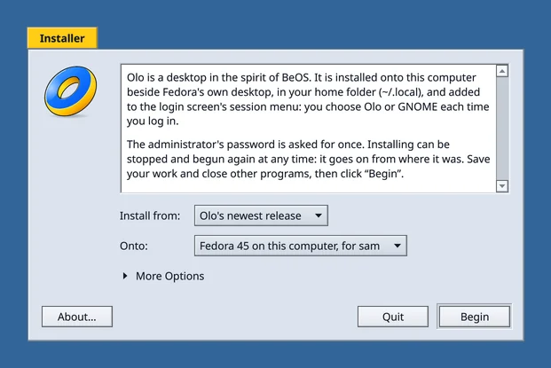
Olo is beta software
It is developed and tested on a few computers, a Lenovo ThinkPad P1 Gen 9 above all, on Fedora 44 and 45. On hardware it hasn't met yet, expect rough edges: a special key that does nothing, a touchpad that needs tuning, a display mode not offered yet.
Make your computer one it knows
The olo-hardware skill has your coding agent read what your computer has, compare it with what Olo supports, agree with you what to do, then build, test and measure it, as the ThinkPad's support was made.
$ claude --model claude-opus-5-5 --effort xhigh # then: /olo-hardware